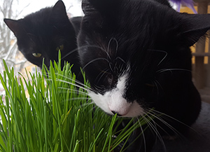
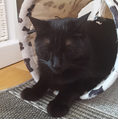
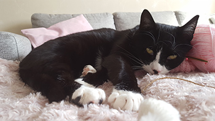
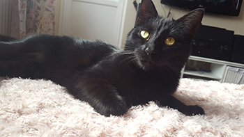

Vad är viktigt att tänka på innan du skaffar en katt?
- En katt är ett stort ansvar. Har du verkligen tid för den? Om du jobbar på dagarna kan det vara en bra idé att katten har en kompis. Två katter har ofta stor glädje av varandra både när det kommer till sällskap och lek. En innekatt kräver mycket aktivering och att du har tid att leka med den på dagarna. Den behöver stimulering precis som ett barn. Det naturliga beteendet för katten är att leka, äta och sova.
- Inred ditt hem efter katten. Det finns många sätt du kan inreda ditt hem efter katten, både när det kommer till klösträd och egna möbler. Hur du placerar möblerna i ditt hem kan ge din katt en stor trygghet och glädje då den gillar höga höjder. Katten behöver en mysig sovplats, gärna i ditt sovrum om den inte sover tillsammans med dig i sängen. Om du har två katter behöver du en låda per katt. Kattlådan ska bytas minst en gång om dagen så att de har rent och fint. En gång i månaden kan man tömma all sand och göra rent lådan med rengöringsmedel.
- En katt kostar pengar så det är viktigt att tänka på att det kan förekomma utgifter förutom mat, kattsand och andra tillbehör. Skaffa en försäkring till din katt. Veterinärbesök kan bli en dyr historia. Om din katt blir sjuk är det viktigt att kunna ta den till veterinären. Försäkringen täcker inte alltid alla utgifter hos veterinären, bland annat tänder. Därför är det bra att ha en buffert undansparat ifall det skulle komma utgifter som du inte har räknat med.
- Om du har en innekatt kan du näta in din balkong. Tänk på att vara noga med att näta in den hela vägen till taket på balkongen om du bor högt upp så att katten inte ramlar ut.
Text av Rebeca Sundbaum
Minska buskaveln - Kastrera och id-märk din katt
I Sverige så finns det i dag tusentals hemlösa katter. Anledningen till detta grundar sig i att människor inte tar sitt ansvar och släpper ut sina katter okastrerade samt att katterna inte är id-märks. En okastrerad katthona kan få mellan 1-9 kattungar i en kull. För en hona som går okastrerad och löper blir det många kattungar under sin livstid. Om katten då går ute kan den föda i det vilda och resultatet blir många hemlösa katter som ingen tar hand om. Dessa katter riskerar att svälta eller frysa ihjäl på vintern för att inte tala om alla sjukdomar de kan få. Många människor tar sig också an sommarkatter för det är roligt att ha en katt tillfälligt i sitt sommarhus under semestern. När semestern är slut lämnas katten kvar ensam. Detta är grymt. Katter har med andra ord inte lika hög status och värde i samhället som hundar. Istället för att föda upp egna katter eller köpa kattungar från en uppfödare, adoptera en katt via ett katthem istället. Det är också viktigt att kattägare tar ansvar och kastrerar och idmärker sina katter för att minska buskaveln och antalet hemlösa katter.
Text av Rebeca Sundbaum

2018-12-17- En katt är ett mycket socialt djur och kräver både tid och omsorg. En katt som inte har en kompis mår oftast inte bra av att sitta ensam i en lägenhet åtta timmar om dagen när du är på jobbet…

2018-12-18 - En innekatt behöver mycket stimulering eftersom jakt är en stor del av kattens liv. Deras naturliga beteende är att jaga, äta och sova. Därför är det viktigt att du leker med din katt. Här kan du få fem roliga tips på vad du kan hitta på tillsammans med din katt...
2018-12-31 - Om du bor i lägenhet och inte kan släppa ut dina katter kan du näta in din balkong så de kan få vara ute. Det finns olika lösningar beroende på vad du har för balkong samt vilken våning du bor på...
2019-01-09- Bor du i lägenhet och funderar på vart du ska göra av kattlådan? Har du för dåligt med utrymme för att ha lådan i badrummet? Om kattägaren har kattlådan någon annanstans så riskerar vederbörande att få kattsand i hela lägenheten. Inredningsmässigt kan det också vara tråkigt att ha en kattoalett mitt bland all inredning. Frågan är, vad finns det för praktiska lösningar?
Om Rebeca
Hej! Jag heter Rebeca och bor tillsammans med min sambo Hampus i Tranås som ligger i småland mellan Jönköping och Linköping. Syftet med den här webbsidan är att dela information, tips och idéer till kattägare om just katter. Jag har två katter som heter Lucifer och Luna. När jag skaffade mina katter för snart fyra år sedan kunde jag ingenting. Jag har fått lära mig mycket själv och det vill jag dela med mig av. Trevlig läsning!
Lucifer- katten som en gång var hemlös
Lucifer kom till oss sommaren 2015. Min bonuspappa hittade honom på sitt landställe i ladan intill hans hus. Vi insåg ganska snabbt att Lucifer inte skulle klara sig eftersom hans ena syskon dog. Så vi bestämde oss för att ta hand om Lucifer om det gick att fånga in honom. Lucifer var smart och lyckades rymma flera gånger när min bonuspappa hade fångat in honom i en låda. Tillslut så fick vi hem en tre månaders kattunge som både hade kattsnuva och var väldigt smutsig. Till en början så var han väldigt rädd för människor och gömde sig under vår soffa i en vecka. Han vågade bara sig fram under natten för att äta eller gå på lådan. Efter en vecka förflyttade han sig till tv bänken där han låg och studerade oss på avstånd. Tillslut så lyckades vi bonda med honom genom lek.
Nu är Lucifer en modig katt som tycker om andra människor. Han älskar att hälsa på alla som kommer till oss och mat är det bästa han vet. Han kan flera trick precis som en hund. Bland annat kan han sitta, göra high five, ligga och rulla runt. Han gör vad som helst för att få en liten godbit. Det är nog inte så konstigt med tanke på att han inte hade tillgång till mat innan och fick gå hungrig. Lucifer var hos oss i ett år tills vi beslutade att skaffa en kompis åt honom - Luna.

Luna- den perfekta jägaren
Luna kom till oss midsommardagen 2016. Till en början bråkade katterna en del men de vande sig ganska snabbt vid varandra. Luna är ett riktigt litet energiknippe som älskar att apportera möss och busa. Även om hon snart är tre år så har energin och buset inte ändrats. Hon är som en kattunge fortfarande. Varje morgon ser hon till att väcka mig klockan sju. Om jag inte ställt klockan kan jag lita på att jag får höra att jag ska gå upp minsann.
Luna är väldigt kräsen med mat. Hon äter för det mesta torrfoder. Blötmat går bra om burken är precis nyöppnad. Däremot älskar hon smör. När vi inte ser tar hon alla tillfällen att hoppa upp på bordet för att få en liten smakbit. Jag har aldrig sett en katt som är en så bra jägare. På sommaren har vi inte en enda fluga i lägenheten för hon tar alla och mumsar i sig dem i ett naffs. Äckligt men sant. Lucifer har inte en chans att fånga dem. För hon hinner alltid före. Hon är också väldigt pratglad och pratar mycket.

Text skriven av Rebeca Sundbaum